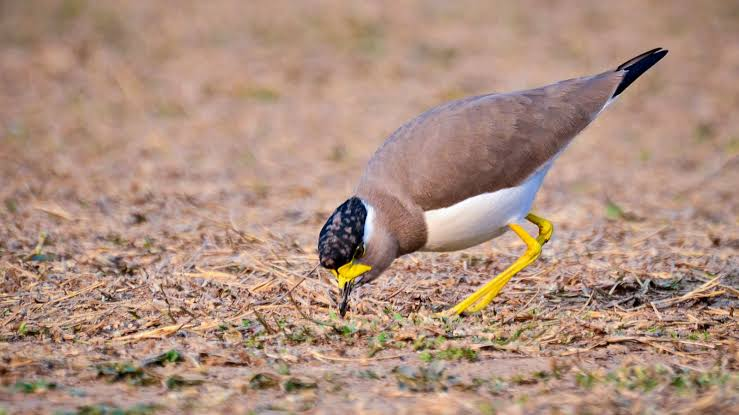

Yellow Lapwing
Birds
The yellow-wattled lapwing is a lapwing that is endemic to the Indian Subcontinent. It is found mainly on the dry plains of peninsular India and has a sharp call and is capable of fast flight. Although they do not migrate, they are known to make seasonal movements in response to rains.
Scientific name: Vanellus malabaricus
Conservation status: Least Concern (Population stable)
Phylum: Chordata
Higher classification: Lapwings
Order: Shorebirds
Rank: Species
The yellow-wattled lapwing (Vanellus malabaricus) is a lapwing that is endemic to the Indian Subcontinent. It is found mainly on the dry plains of peninsular India and has a sharp call and is capable of fast flight.
Although they do not migrate, they are known to make seasonal movements in response to rains. They are dull grey brown with a black cap, yellow legs and a triangular wattle at the base of the beak.
Like other lapwings and plovers, they are ground birds and their nest is a mere collection of tiny pebbles within which their well camouflaged eggs are laid. The chicks are nidifugous, leaving the nest shortly after hatching and following their parents to forage for food.
Bilogy of Yellow Lapwing
Distribution and habitat
This species is common in much of India, being seen in a variety of open lowland habitats. It tends to be seen in drier habitats than the red-wattled lapwing, Vanellus indicus.
They are found in most parts of India, parts of Pakistan, Nepal, Bangladesh and Sri Lanka. They make short distance movements in response to rain but the exact pattern is not known.
Behaviour and ecology
These lapwings breed in the dry season with peak breeding in March to May ahead of the monsoons. The nest territory has been estimated, based on the distance to nearest neighbours, to be about 2.7 acres.
They lay four eggs in a ground scrape. A nest in a clump of grass has been noted as exceptional. Parents visit water and wet their breast feathers ("belly soaking"; they may stay for as much as 10 minutes to soak water ) which may then be used to cool the eggs or chicks.
The four eggs typically hatch simultaneously, even though they are laid with a difference of a few days. The nidifugous young are well camouflaged as they forage with the parents. Chicks squat flat on the ground and freeze when parents emit an alarm call.
A second brood may be raised, particularly when the first fails and young from a previous brood have been seen along with parent birds incubating a second clutch.
Simultaneous courtship displays among several pairs in close proximity has been noted. In one study more than 60% of the nests had 4 eggs-clutches with the rest having 3 eggs.
Hatching success was found to be about 27.58% and egg loss was due to predation and nest damage. The incubation period was 27–30 days. When the nests are approached, the incubating bird attempts to move away from the nest without drawing attention to it.